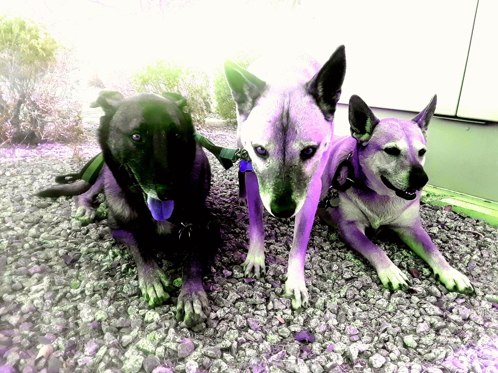

Hotel Fur Fur provides the best care in terms of babysitting your loved ones. We take pride in providing exceptional service to you and your cats and dogs.
Hotel Fur Fur LLC.
We are not your average pet lodge.
The Hotel Fur Fur is located off the I-10 and Litchfield near the Chilis® and Cracker Barrel®.
About Us
Family owned and founded in 2013 by Trevor Flynn and Alanna Hawes who both share a passion for animals, more specifically dogs and cats.Throughout the years, Hotel Fur Fur has gained traction from local residents of Avondale, Goodyear, Litchfield Park, and Buckeye areas. At Hotel Fur Fur, we belive our home is your home.Give us a call if you feel you have questions regarding our services. At the Hotel Fur Fur, we pride ourselves and our families in supplying the best pet care for you and your family. We provide services which are helpful for anyone with Fur Fur family members. We provide day and night care as far as giving the pet a place to hangout, eat, drink, sleep, and play with some of our friendly staff members. Our main goal is customer service, and it all starts with happy pets.
UPDATE!
Due to the recent CDC, state, and local guidelines, as well as the federal governments regulations, we are limiting the number of animals that our Hotel Fur Fur can hold. This in no way affects the quality of our service, we are ensuring strict processes of sanitation each and every moment. The health and safety of both you and your pets as well as our staff members, is the absolute number one objective of ours.
Ask about our custom made facemasks for sale.
It goes without saying that our motto is quality over speed, we are not in the business to simply make a dollar, but to provide the public with a service in which they can trust, rely on, and look forward to each and every time we are needed! Please call for any clarification regarding Covid-19 and Hotel Fur Fur.